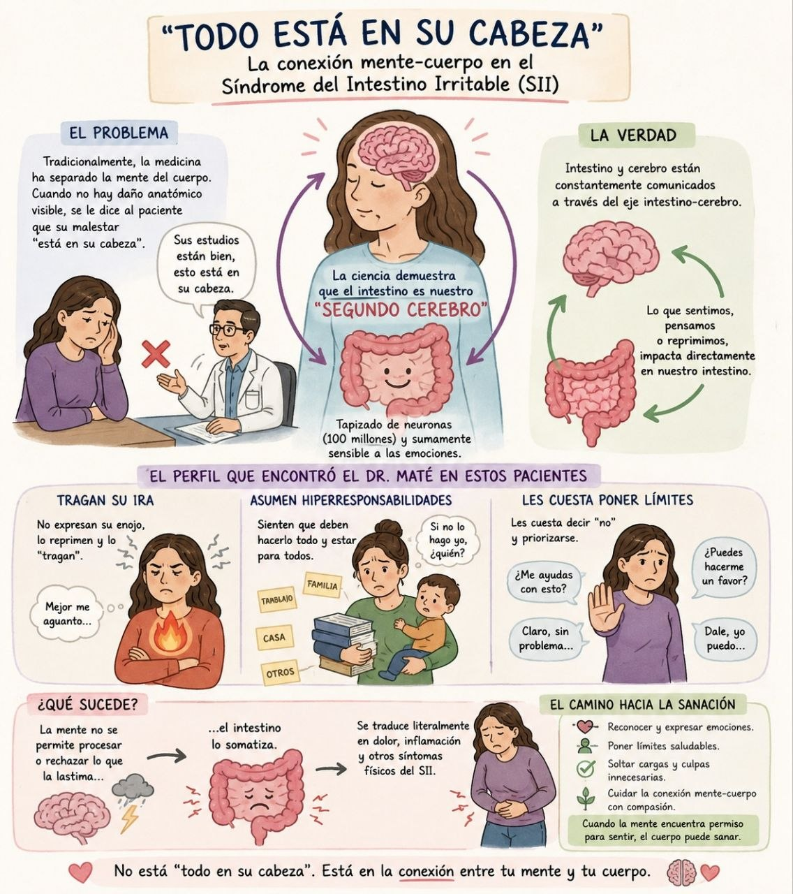
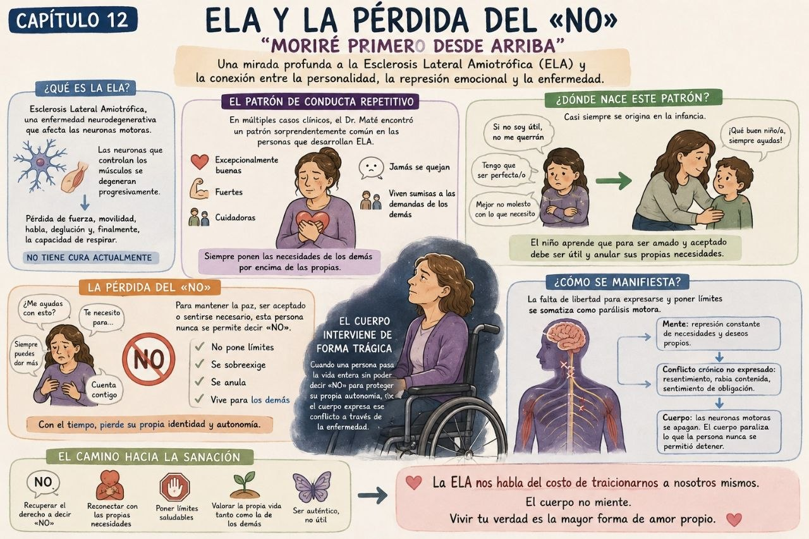
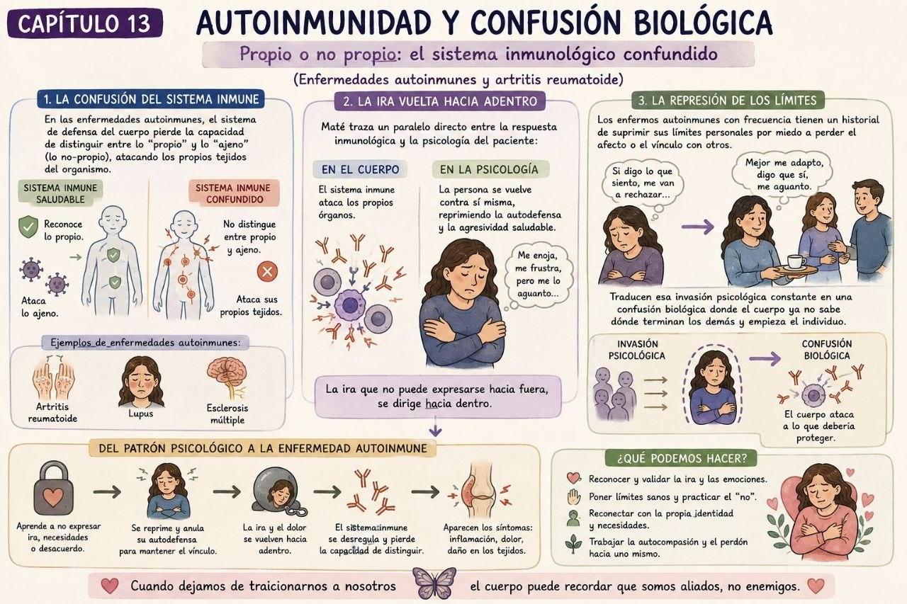

UNA CONVERSACIÓN EN TRES ESTACIONES
Escuchar el cuerpo.
Sin buscar culpables.
Estas láminas sirven para abrir conversación sobre Cuando el cuerpo dice NO, de Gabor Maté. Exploren cada escena, elijan qué harían y descubran una idea para llevarse.
Una imagen puede inspirar una pregunta; por sí sola no demuestra la causa de una enfermedad. Las experiencias emocionales importan, pero nadie es culpable de enfermar.
CAPÍTULO 11
Intestino:
una conversación en dos direcciones.
El síndrome del intestino irritable implica una interacción entre cerebro e intestino. El malestar es real; que no aparezca una lesión visible no significa que alguien lo imagine.
Para llevarnos: escuchar síntomas y preguntar por el contexto pueden ir juntos; una cosa no sustituye la evaluación médica.
Alguien te cuenta que tiene dolor, pero sus estudios iniciales salieron bien. ¿Qué le responderías?

CAPÍTULO 12
ELA:
una historia no es una causa.
La ELA afecta las neuronas motoras y requiere atención especializada. Una historia de vida puede ayudarnos a escuchar a una persona, pero no permite explicar por qué desarrolló la enfermedad.
Para llevarnos: acompañar sin convertir la personalidad, la generosidad o los límites de alguien en un diagnóstico.
Una persona con ELA fue muy cuidadora de los demás. ¿Qué podemos concluir de esa historia?

CAPÍTULO 13
Autoinmunidad:
metáfora no es mecanismo.
En algunas enfermedades autoinmunes, el sistema inmunitario responde contra tejidos propios. Sus causas son complejas y no se explican por no poner límites, reprimir la ira ni «atacarse» emocionalmente.
Para llevarnos: dar espacio a las emociones y cuidar los vínculos vale por sí mismo; no como promesa de curar o prevenir una enfermedad.
La lámina compara «poner límites» con la defensa inmunitaria. ¿Cómo podemos usar esa comparación?

PARA CERRAR EN GRUPO
¿Qué nos llevamos
y qué podemos aplicar?
Escuchar con curiosidad. Acompañar sin juzgar. Preguntar qué apoyo hace falta. Y recordar: cuidar las emociones importa, pero nadie tiene la culpa de enfermar.
Volver a la exposición principal ↗